대기실에서 단서를 찾은 직후
장소를 찾기 쉬웠다는 응답 6/8명. 가장 오래 막힌 구간으로 대기실 탐색·탈출 준비를 선택한 응답 5/8명. 다음 관찰 지점은 단서를 손에 넣은 뒤의 행동
공연으로 자금을 모으고, 대기실에서 단서를 찾고, 무대에서 익힌 묘기로 서커스를 탈출하는 PC 2~4인 협동 게임.
4인 팀장 · 레벨 및 협동 게임플레이 기획·구현
게임 원안과 모든 묘기의 규칙을 직접 구상했습니다. 탈출로 전 구간을 혼자 설계하고 구현했고, 외줄타기와 인간 대포의 협동 규칙을 만들고 테스트 결과에 따라 다시 설계했습니다. 팀장으로서 분업과 최종 빌드 범위를 정했습니다.
상세 기획서 보기 탈출로 레벨 설계부터 보기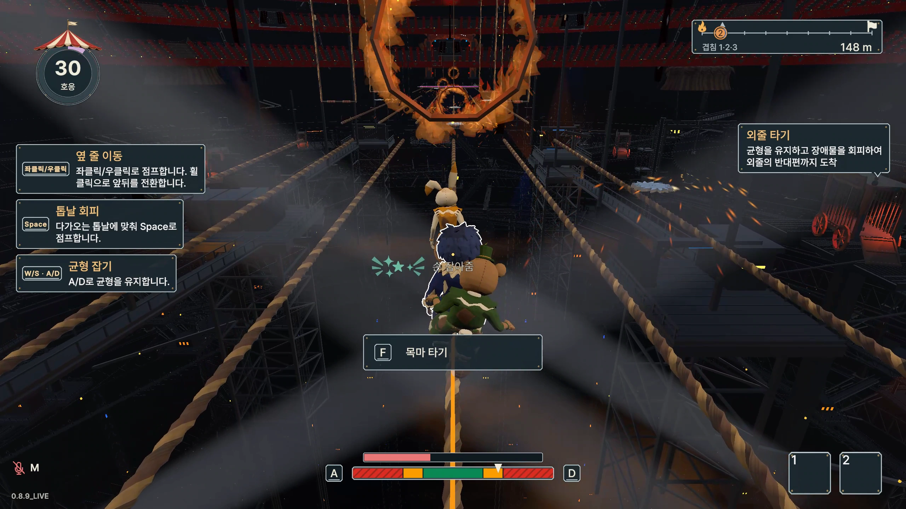

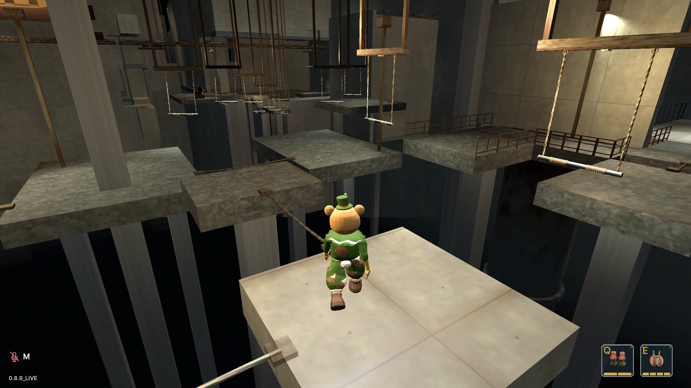
이 페이지의 M1·M2·M3는 첫 번째·두 번째·세 번째 플레이테스트에 쓴 빌드입니다. 골렘은 탈출로에서 단원을 쫓는 추격자, 목마는 동료 위에 올라타 함께 움직이는 묘기입니다.
M3 최종 테스트에서 기록한 외줄 공연, 대기실 탐색, 공장 탈출과 골렘 추격.
외줄타기의 균형, 옆줄 이동, 목마 규칙을 직접 설계했습니다. 한 사람이 뛰거나 기울 때 동료도 균형을 다시 잡아야 하는 협동 묘기입니다.
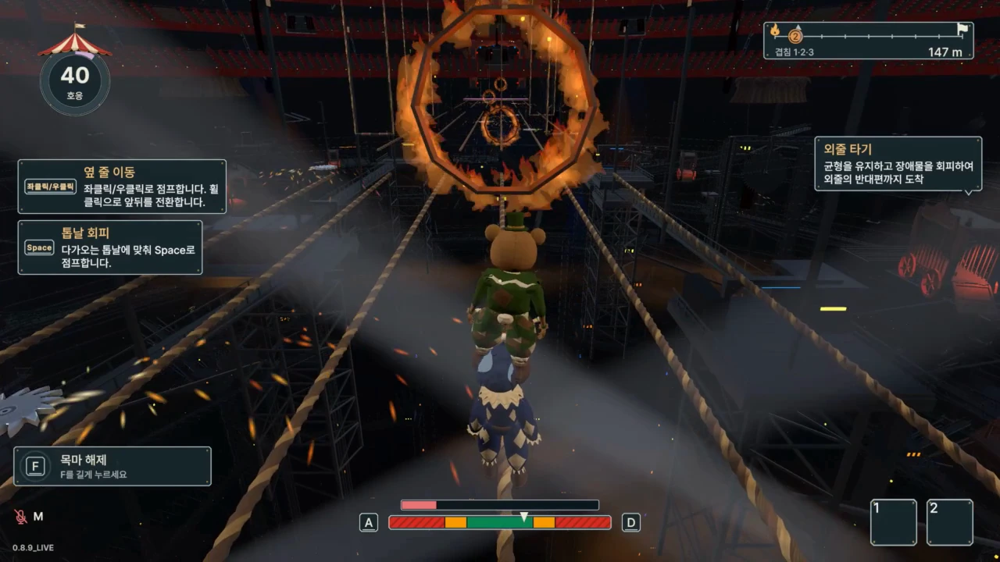
대포로 날아가는 사람과 지상에서 받아 주는 사람이 짝을 이루는 묘기입니다. 발사·받기 규칙을 직접 구상하고 구현했고, 테스트에서 드러난 문제에 맞춰 공중과 지상의 역할을 다시 설계했습니다.
대포로 발사된 뒤 봉을 잡아 지상 통로의 톱을 정지. 동료가 지나가면 다음 착지점으로 이동.
| 구간 | 공중 | 지상 |
|---|---|---|
| 출발 | 발사 간격 조절 | 착지점으로 이동 |
| 톱 관문 | 봉을 잡아 톱 정지 | 톱 아래 통과 |
| 쉼터 | 승강기 개방 | 승강기 탑승 후 역할 교대 |
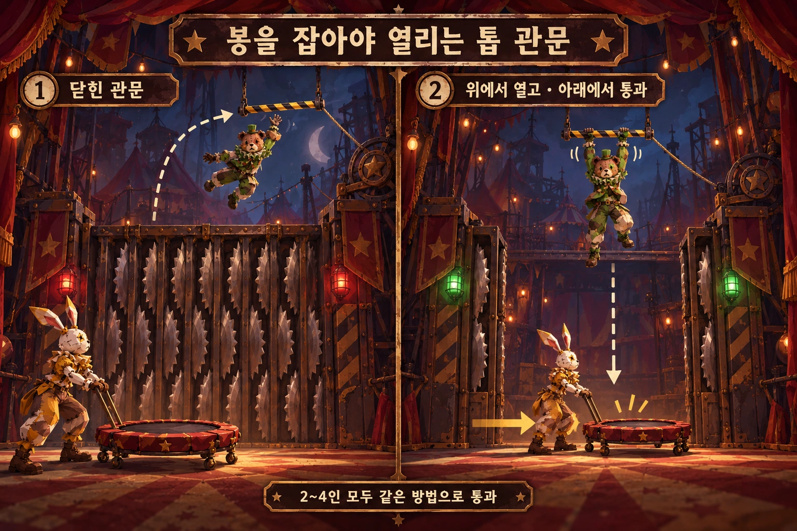
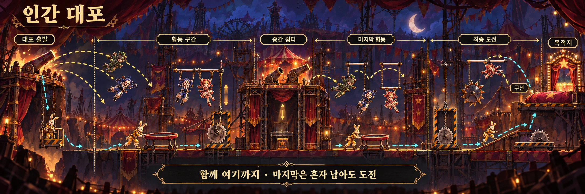
공연에서 익힌 묘기를 이어 써서 공장을 빠져나가는 마지막 구간입니다. 전 구간을 혼자 설계했고, 갈림길과 합류 지점, 묘기 기물의 배치, 추격자(골렘)의 동선을 기획해 Unity로 구현했습니다.
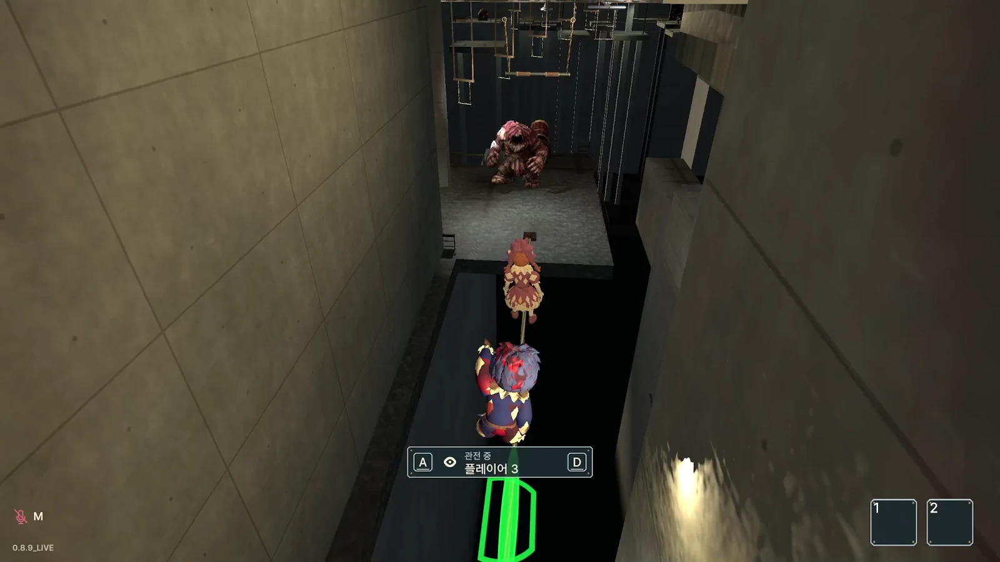
탈출로 A / 구간 탐색
두 단원은 좁은 외줄 위, 골렘은 건너편 착지 발판에 위치. 먼저 건너는 단원이 골렘의 시선을 끌고 동료가 지나갈 틈을 만드는 협동 설계.
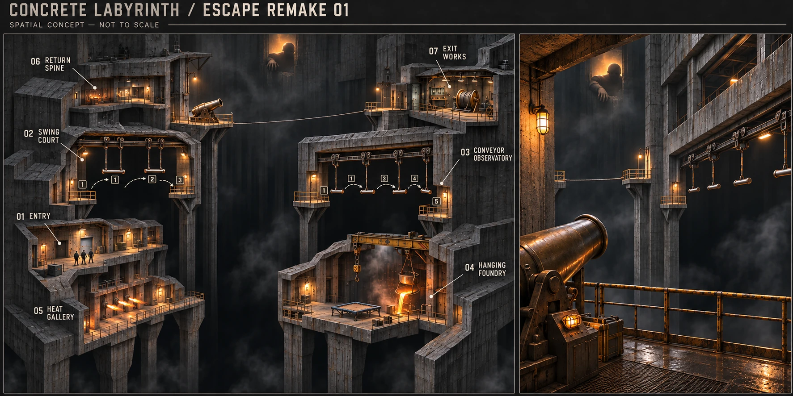
순환하는 봉을 기다리거나, 아래쪽 봉을 연달아 타거나, 대포로 건너갈 수 있다. 세 길은 같은 하차장에서 만난다.

공연에서 익힌 묘기를 스스로 꺼내 써야 하는 마지막 작업장. 최종 테스트의 두 질문은 추격에서 느낀 긴장과 그 순간 알아본 목표
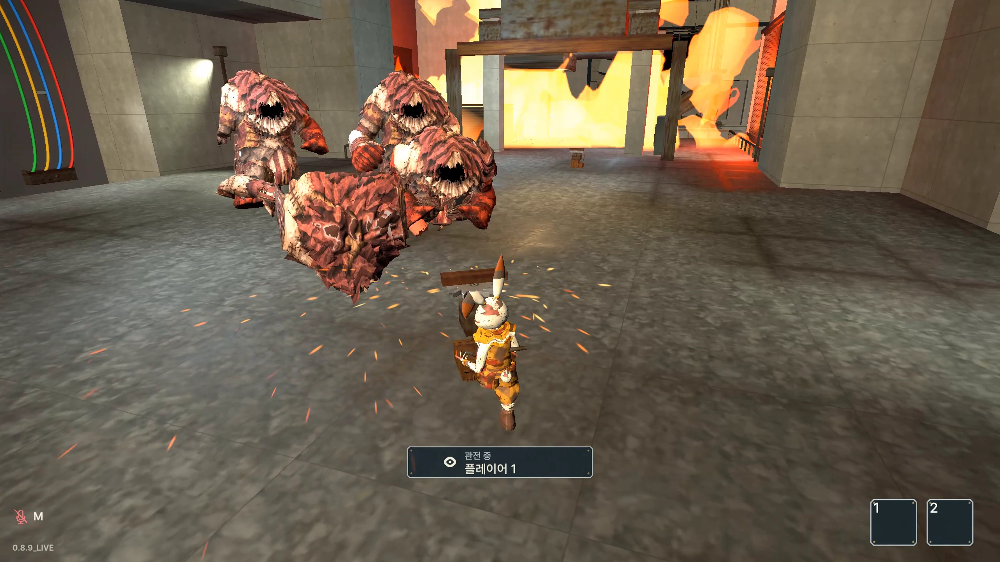
다음 테스트에서 볼 것 거구가 나타난 직후의 역할 분담에 주목. 누가 추격자를 유인하고 누가 배선으로 향하는지, 두 단원의 첫 이동과 첫마디 관찰
장소를 찾기 쉬웠다는 응답 6/8명. 가장 오래 막힌 구간으로 대기실 탐색·탈출 준비를 선택한 응답 5/8명. 다음 관찰 지점은 단서를 손에 넣은 뒤의 행동
다시 하고 싶다는 응답 8/8명, 같은 방에서 실제로 재시작한 응답 2/8명. 엔딩 뒤 무엇이 유지되고 초기화되는지 더 알고 싶었던 응답자 4/8명
탈출로 세 항목의 응답 기준은 12명입니다. 대기실과 재플레이 항목에는 2026년 11월 23일 빌드 0.8.9의 2일차 설문을 사용했습니다. 중간·종료 설문은 각각 8건입니다.
18시 13분 로그 집계는 플레이 11회, 이벤트 40,619건. 설문에는 일부 중복된 플레이가 포함됩니다. 당시 인간 대포 결과와 추격·탈출로 이벤트는 미수집, 일부 전송 대기.
공간 설정은 기존 공장에 덧붙인 낯선 생산 설비. 벽의 개구부로 다음 목적지가 보이게 하고, 어두운 구간의 작업등은 착지면 위에 배치하는 연출안. 탈출로 리메이크 기획서 발췌
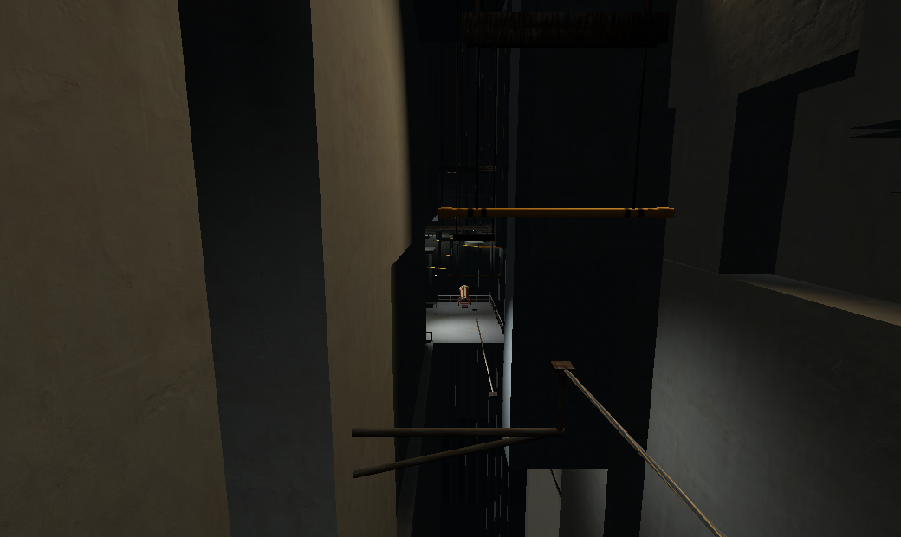
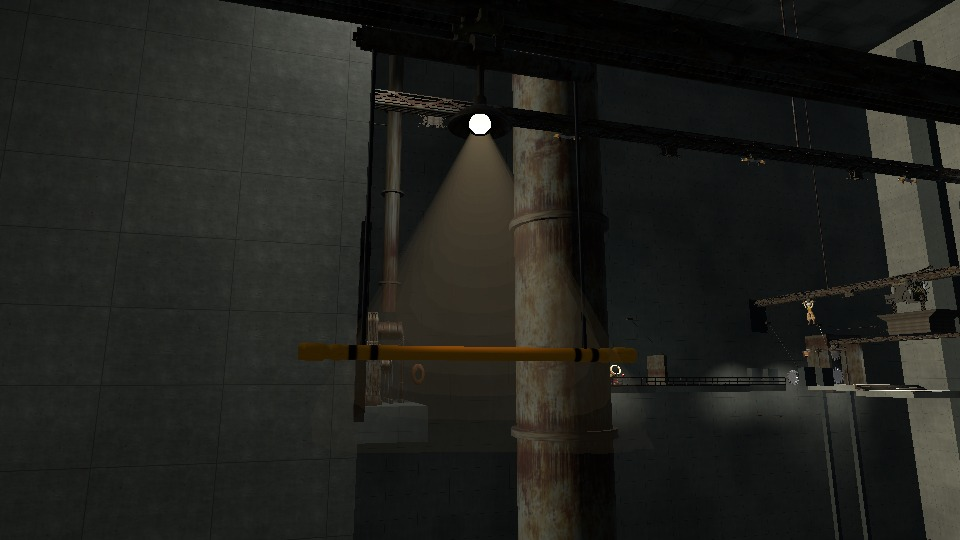
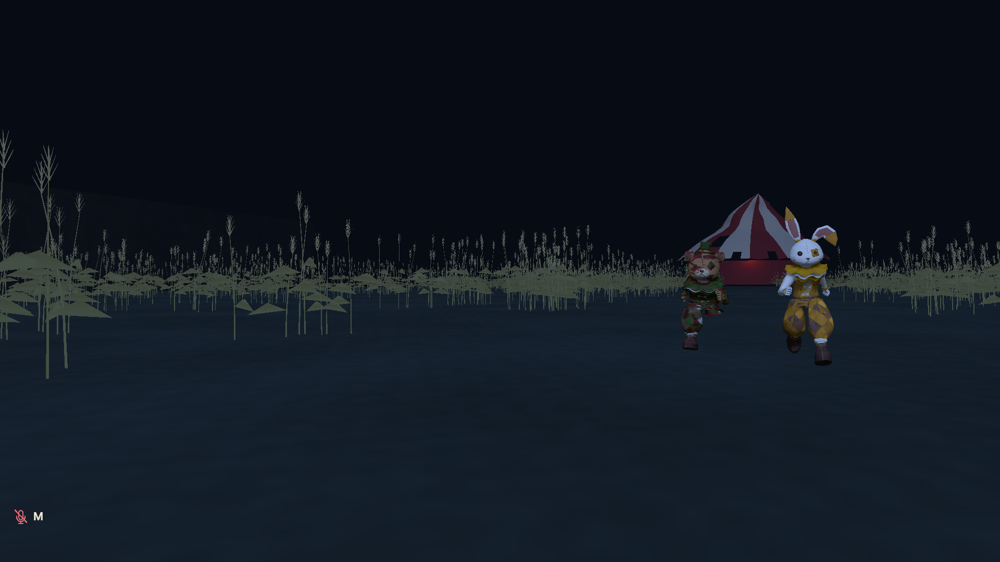

첫 번째 플레이테스트(M1)의 10월 23일 설문에서 목표를 파악하기 어렵다는 응답 16/18건. 다음 빌드에서 맡은 과제는 공연의 묘기를 그대로 쓰는 탈출 동선 설계.
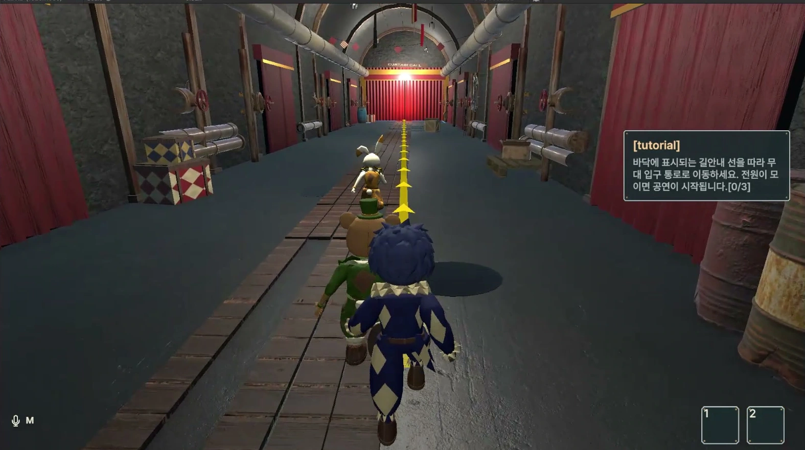

빌드 비교 · 같은 복도에 더해진 바닥 안내
| 관찰 항목 | M1 | M2 |
|---|---|---|
| 인간 대포 공연 성공 | 0/2회 | 2/3회 |
| 대포 역할 이해 | 미집계 | 10/10명 |
| 게임 전체 재플레이 의향 (종료 설문) | 3/11명 | 11/12명 |
재플레이 의향은 M1 10.23, M2 11.06 종료 설문의 긍정 응답 수. 빌드별 문항 표현과 참가자가 다름. 대포 성공 횟수는 공연 로그를 기준으로 집계.
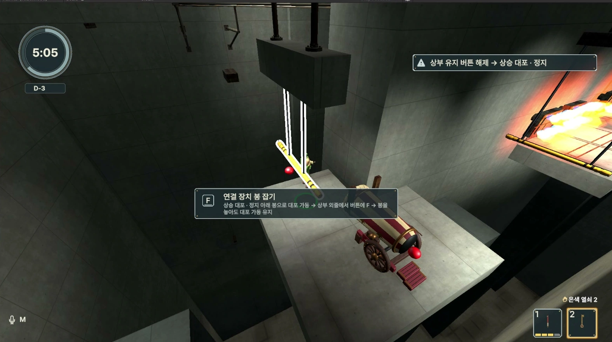
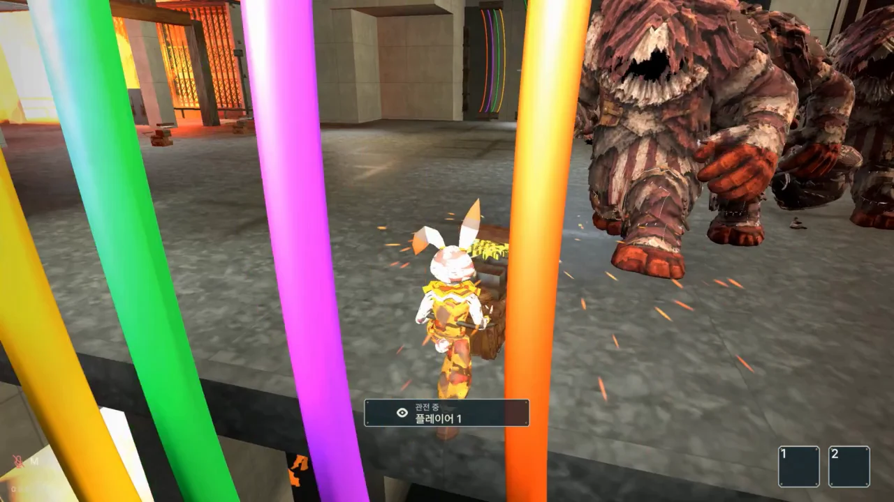
M1은 공연에서 조작 습득, M2는 리허설 추가, M3는 대기실에서 준비 목표 안내. 장면별로 바뀐 동선과 화면 비교.
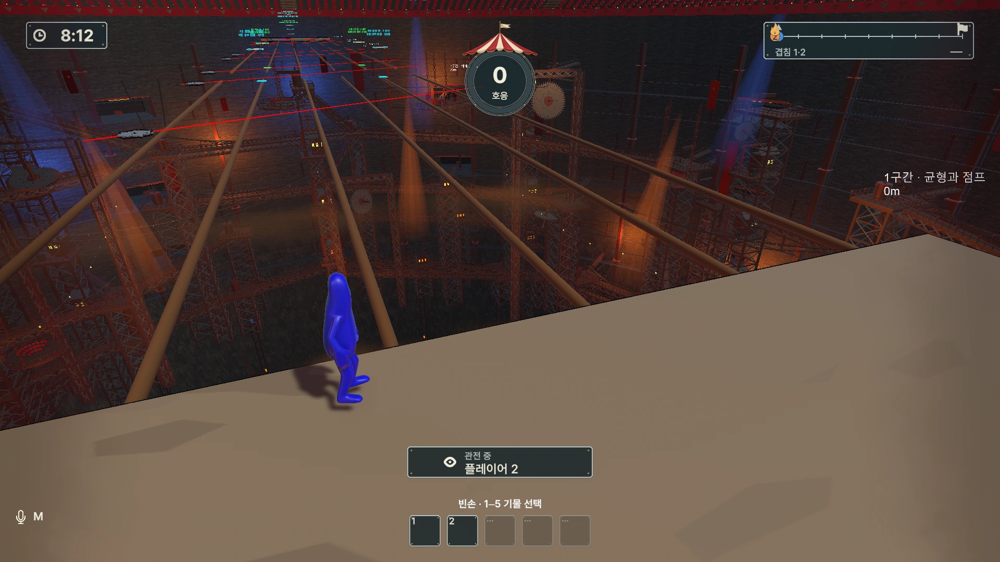

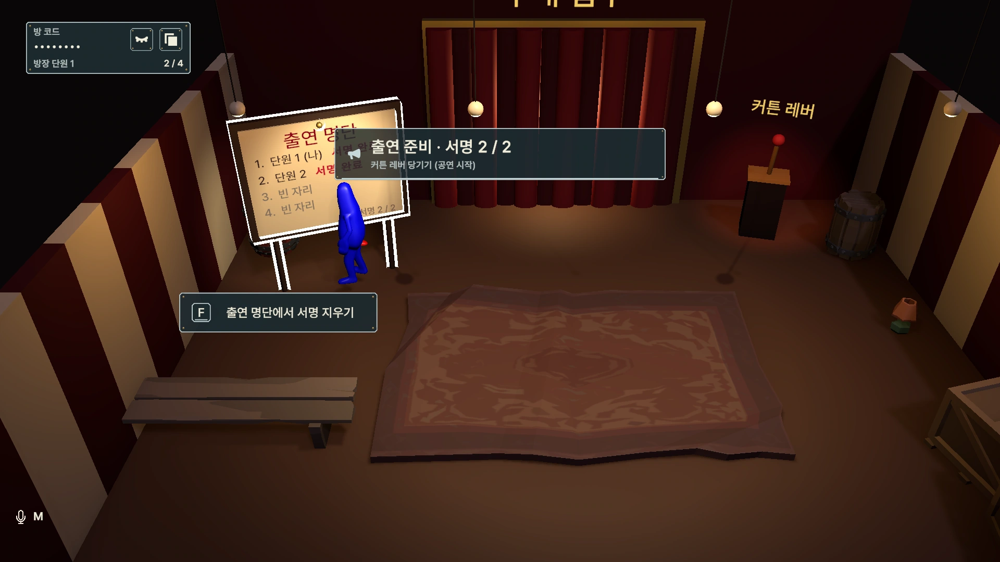


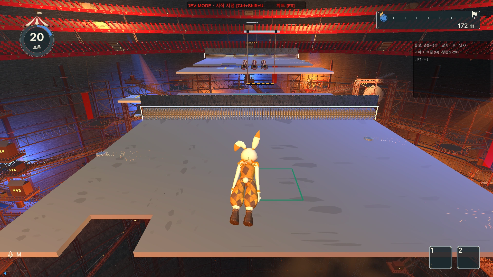
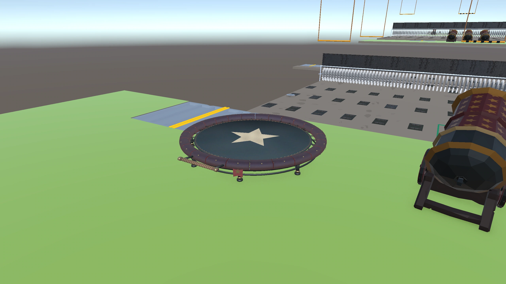


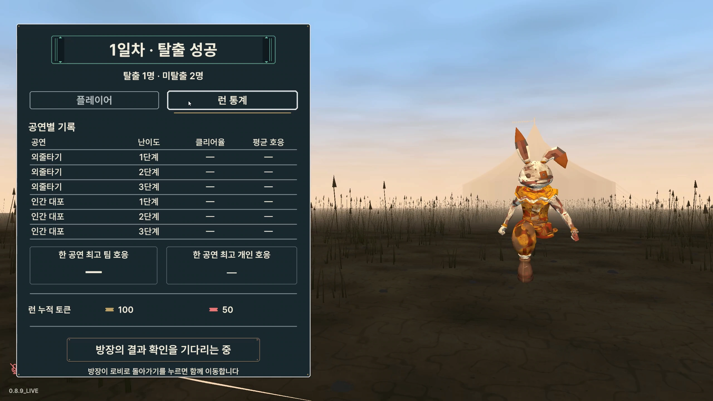
직접 플레이 화면은 해당 배포 빌드에서 1920 × 1080으로 재촬영. 개발 녹화와 씬 재촬영은 장면별 캡션에 표기
묘기 검증, 씬별 담당 배정, 씬 사이의 공통 조작 통일 순으로 진행.
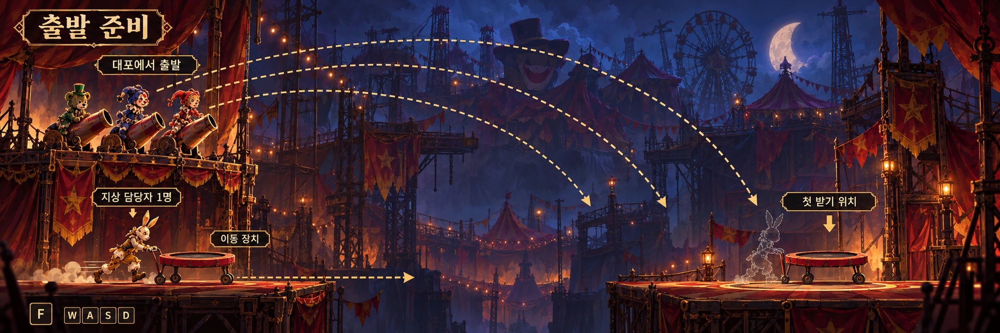
그레이박스에서 궁금했던 건 친구와 묘기를 한 번 더 하고 싶은지. M1에서 처음 마주한 문제는 묘기에 닿기도 전에 길을 잃는 플레이어
팀 Confluence에 직접 작성한 기획서 8편. 컨셉부터 M3 튜토리얼까지 작성 순서. 사이트에서 바로 읽기 또는 Google Drive PDF로 열람.
한 줄 설명, 플레이어가 느낄 감정, 규칙 7개, 루프와 동선, 핵심 설계 의도, 미정 11개
4인 맨몸 외줄, 균형바, 목마 층별 규칙, 가로·수직 톱날, 신체 결손의 확정 규칙과 수치
2~4인 탈출로 10구역 동선, 복합 묘기 연결, 협동교 3종, 공용 8분과 화염 추격, 배선 출구
분기와 합류 경로, 컨베이어 병목 분산, 거구 추격자의 연출과 공정성, 검증 시나리오
열쇠 동선 폐기, 방 맞바꿈, 신규 지역 8곳, 최종 탈출 동선 7단계, 문서와 구현의 차이
벽의 낙서, 숨겨진 낙서, 노트·신문 원문, 물건 단서, 상호작용 기물과 수치
무음 컷씬 3편의 기획 의도, 감정 목표, 연출 규칙, 등장인물, 샷 목록, 컷씬 간 연결
리허설 5구간, 대기실 안내 G·N·S, 숙소와 작업실·소품실의 학습 흐름, 구역 잠금